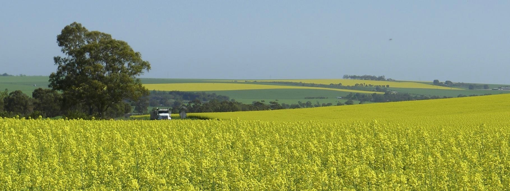

Dakota Harvest of Hope is dedicated to supporting farmers experiencing post-traumatic stress and other mental health challenges related to agricultural life. We create a space where individuals can connect, share experiences, and support one another.
We connect farmers through peer support and community outreach, helping individuals build meaningful relationships and find encouragement from others who understand their experiences.